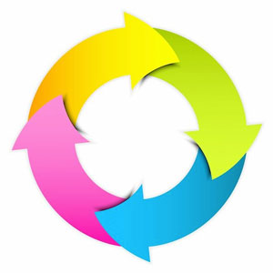
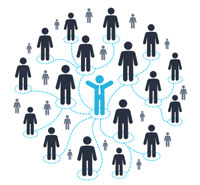

В рамках второй темы «Инновационный кластер – форма горизонтального партнерства компаний» обсуждались следующие тезисы и проблемные аспекты:
- Кластеры – это разновидность сетевого партнерства
- Отличительные черты инновационного кластера
- Жизненный цикл кластера и кластерный процесс
С целью понимания специфики кластеров как разновидностей сетевых партнерских структур были рассмотрены возможные
формы сетевых структур, их особенности и решаемые задачи
Обсуждение показало, что практически любая компания сотрудничает с партнерами по разным поводам: это совместные научные
исследования и участие в грантах\тендерах, производственная кооперация, маркетинг, совместные продажи и другие
совместные мероприятия, лоббирование интересов и т.д.
При этом заключаются соглашения о сотрудничестве, выходящие за пределы обычных взаимоотношений компаний,
но не предполагающие их слияния. Это могут быть соглашения о создании ассоциации как самой «мягкой» формы сотрудничества,
стратегического альянса, консорциума, сетевой структуры.
Сетевая структура – это свободно связанная, гибкая, горизонтально организованная система равноправных, но, как правило,
разных по выполняемым ролям и функциям независимых партнеров.
От сетевых структур легко перебрасывается мостик к кластерам, которые:
- Являются разновидностью сетевых структур
- Характеризуются разнообразием участников (акторов)
- Формируются с целью повышения конкурентоспособности участников и региона, где они расположены.
В процессе обсуждения возник вопрос – какую структуру можно назвать инновационным кластером? В чем его специфика?
Итоговое мнение:
- Инновационный кластер более зрелая форма партнерства (сложная игра), ориентированная на использование возможностей и
соответственно на активную позицию участников в противовес адаптации, пассивной стратегии выжидания и последующего
присоединения к новой технологии.
- При возникновении «окна возможностей» важны время и скорость -> объединение усилий ряда участников.
- Ключевой признак – новизна (новые идеи, технологии, возможности, рынки, отношения). Люди могут сами создавать новое.
Новое манит, но пугает! Там много неясного, поэтому даже крупные корпорации не готовы взять на себя все риски, даже
их ресурсов может не хватить для реализации -> формирование концепции open source и объединение усилий участников.
- В борьбе за формирование будущего важны творческие решения: креативность, а не аутсорсинг! Объединяемся, чтобы
творчески решить проблемы.
- Новизна идей, технологий определяет «ускользающую» цель кластера и необходимость распределения рисков между
участниками.
- Сочетание конкуренции и сотрудничества (со-конкуренция).
- Специализация участников с перспективой установления «мостов» со смежными сферами деятельности
(для биотехнологического кластера – это сферы здоровья, питания, сельского хозяйства и экологии).
- Многообразие участников (экономических акторов) – это не только компании, но и представители науки, образования,
финансовых структур, организаций инфраструктуры поддержки инновационной деятельности, представители власти.
Основа сотрудничества – модель «тройной спирали».
Вывод: инновационный кластер – это партнерство участников, которые готовы создавать что-то новое и готовы ради этого рисковать
(есть желание «играть» и готовность внести вклад, рискнуть).
Вопросы-задания для участников программы:
Если компания готова участвовать в деятельности инновационного кластера, то
- Где границы вашего бизнеса? В чем вы профессионалы? По сути, речь идет об определении пределов компетенций компании, ее специализации.
- Чем готовы рискнуть (что готовы поставить на кон игры)?
- Ради чего готовы рисковать?
Кластеры, как и другие организационные структуры, проходят в своем развитии ряд стадий жизненного цикла.

1 стадия – агломерация (рой). В регионе (в нашем случае – в районе) есть компании и другие потенциальные участники,
заинтересованные в развитии сотрудничества, повышении конкурентоспособности участников и региона в целом.
На этой стадии создаются ассоциации, возникают стихийные связи и взаимодействия.
2 стадия – формирование кластера. Ряд участников кооперируется вокруг ключевой деятельности (идеи) для реализации
общих возможностей через свои связи (появляется зародыш кластера).
3 стадия – развитие кластера, она характеризуется новыми связями между участниками, участников связывают общая
деятельность, общие торговые марки, сайты, здравый смысл … Возникают или привлекаются в регион новые участники этой
общей деятельности или же связанной с ней деятельности .. . . В регион могут прийти финансовые фонды и иные организации …
4 стадия – зрелость. Для этой стадии характерна некоторая критическая масса участников + развитие отношений вне кластера,
с другими кластерами, регионами, видами деятельности . . .
Трансформация кластера – неизбежный этап его развития, так как динамично меняются технологии, процессы, рынки, отношения ….
Естественные вопросы: кто является катализатором кластерных инициатив и как запускается кластерный процесс?
Многие кластеры возникают спонтанно и складываются постепенно, в течение длительного периода времени.
Более осознанные действия – кластерные инициативы – развиваются на определенном этапе, когда
Катализаторы кластерных процессов:
- Инициатива и действия правительства
- Окно возможностей: предпосылки предшествующего развития, наличие в регионе специализированных факторов – экономических,
технологических, социальных и пр.
- Кризисные явления
- Лидер, у которого есть видение, или группа лиц, заинтересованных в развитии региона, создании «региональной идентичности»
Гораздо сложнее ответить на вопрос о том, как запускается кластерный процесс. Очевидно, что он может идти сверху – вниз
по инициативе правительства или организации (конструируемый кластер), либо снизу – это органический процесс формирования
кластера. В принципе возможно сочетание этих подходов.
При органическом (естественном) процессе формирование кластера происходит по инициативе нескольких участников, при этом
происходит спонтанное создание связей и совместных стратегий, формирование чувства идентичности.
Западные исследователи выделяют в кластерном процессе ряд этапов, наиболее значимые этапы:
- Формирование \ развитие социального капитала и создание механизмов построения доверия между участниками
- Развитие связей между участниками, формирование общего видения, определение стратегии развития кластера
- Собственно деятельность кластера (понимание этой деятельности)
Социальный капитал кластера и доверие

Социальный капитал – это реальные или потенциальные ресурсы, связанные с обладанием устойчивой сетью более или менее
институциализированных отношений взаимного знакомства и признания (Птер Бурдье). Социальный капитал создает опору
взаимоотношений и репутацию, что позволяет получать кредиты во всех смыслах этого слова, без него сложно строить доверие . . .
Основой социального капитала является человеческий капитал + доверие + нормы и обязательства + единое понимание
Формирование социального капитала кластера:
- Осведомленность о потенциальных выгодах кластеризации ключевых заинтересованных сторон.
- Открытость кластера, открытое общение участников, транспарентность (доступность информации, отсутствие секретности)
- Расширение сферы обмена информацией
- Формирование сетей знаний (advanced knowledge networks)
- Опора на совместные идеи и усилия, если они не в ущерб или за счет других участников кластера, – способ поддержания доверия
- Формирование групп, в которых индивидуальные компетенции как используются, так и выращиваются
Вывод и проблема: чтобы сохранить доверие, кластер должен обеспечить баланс конкуренции и сотрудничества.
Сложно – тонкое балансирование между тем, какой информацией можно поделиться, и какой не стоит делиться с коллегами,
которые являются одновременно партнерами и конкурентами.
Кластер приводится в движение успехом!
Поэтому обсуждение в рамках третьей темы «Лучшие практики кластерного сотрудничество и со-конкуренции»
было направлено на то, чтобы показать примеры сетевого сотрудничества, а также разобрать возможные преимущества кластеров.
Отношения «сотрудничество – соперничество», или со-конкуренции, возникают в тех случаях, когда компании
кооперируются со своими конкурентами ради извлечения взаимной выгоды. Эта модель преобладает в высокотехнологичных
отраслях экономики, особенно развито «доконкурентное» сотрудничество в сфере R&D.
Подобную модель использовали IBM, Apple, Microsoft и другие компании для проникновения на новые рынки и для дальнейшего
упрочения своего положения на тех рынках, где они уже господствовали.
Примеры сетевого сотрудничества в сфере R&D.
- Интерактивное телевидение – Sega, AT&T, Time Warner, TCI, Matsushita, Liberty Media, QVC
- Воспроизведение изображения – Kodak, AT&T, Apple, Philips, Motorola, Silicon Graphics
- Кабельные преобразователи – Microsoft, Intel, General Instruments, Kaleida Labs, Scientific Atlanta,
Silicon Graphics, TCI, Time Warner, Toshiba
Пример разных форм конкурентного сотрудничества двух признанных лидеров
| Sony – Япония | Samsung – Корея | | История создания | Создали в 1946 г. изобретатель М.Ибука и менеджер А.Морита. Цель – сделать жизнь потребителей удобнее
благодаря новаторским продуктам. | Создана (1969г.) как филиал международного конгломерата Samsung Group (1938г.) для выхода на рынок
электроники. «Полупроводники – хлеб электронного бизнеса. Внесем свой вклад в развитие нации». |
| Основные направления бизнеса | Электронный бизнес (40%) + развлечения: музыка (Sony BMG), кино (Sony Pictures Ent.),
компьютерный бизнес (Sony Computer Ent.) + банк и пр. | Электронные комплектующие (полупроводники), LCD-телевизоры, мониторы, мобильные телефоны |
| Реакция на цифровые технологии как вызов внешней среды | Создание партнерских сетей и эффект синергии (soft+hard – 2 колеса телеги) | Производство комплектующих для отрасли, широкий диапазон бытовой электроники и электроприборов |
| Конкурентные стратегии: партнерство и конкуренция | Поставки аккумуляторов, зарядных устройств Samsung | Поставки микросхем DRAM , флэш-памяти Sony |
| Совместное предприятие « S – LCD»: Sony – лидерство в разработке новых продуктов, Samsung – в сфере
LCD-технологий (жидкокристаллические экраны тонкопленочной TFT технологии) |
| Партнерство с IBM, Toshiba. Совместное предприятие Sony Ericsson (2001). | |
| Разработки: продукты и технологии | Покупка лицензии (транзистор, 1955), собственные товары и технологии (Trinitron (1960) –
качество для цветных ТV, Walkman (1979), видеомагнитофон, видеокамера, ТV высокой четкости, игровые приставки,
ПК VAIO и др.). | Технологический лидер в LCD и TFT-технологиях. Самая технологически новаторская компания
в производстве DRAM и флэш-памяти. Флагманский продукт – мобильные телефоны. |
Примеры кластеров
- Креативные кластеры – в Шотландии, Голливуд в США, создается в Санкт-Петербурге (для коммерциализации культурного потенциала города)
- Оптический кластер в Аризоне
- Морской кластер в Австралии
- Долина Этна в Италии, Сицилия - производство полупроводников, компьютерных чипов, ПО, биотехнологий.
В кластер пришли крупные компании со всего мира – 23 предприятия принадлежат Нокиа, IBM, Алкатель и др.
Ежегодно создается до 60 новых фирм, работают 5000 чел. Средний размер фирмы — около 5 работников
- Кластер электроинструментов вокруг Венеции
- Эмилия-Романья: кластер Сассуоло «керамическая плитка» + кластер «Долина моторов»
Преимущества кластеров
- Сила социального капитала -> кредиты (ресурсы, доверие, поддержка …)
- Совместное использование знаний
- Парадигма открытых инноваций, в рамках которой неформальные (доверительные) отношения облегчают процессы изменений
- Взаимное опыление идеями (cross-pollination), информационный обмен, облегчающий и ускоряющий инновационные процессы
- Использование ресурсных рычагов, в том числе извлечение опыта, анализ ошибок
- Создание барьеров для других
- Новые ниши, продукты за счет «конструирование» связей и доступа к новым компетенциям (управление)
- Кластерные солидарность и самосознание (общая торговая марка, маркетинг, кооперация, сетевая активность …)
- Среда обучения – общение, обсуждения, …
- Отношения с государством и финансовыми структурами
- Социальный комфорт
- Кластерная культура
- Гибкая специализация (Италия)
- Синтез мастерства и новейших технологий
- В рамках государства кластеры являются точками роста внутреннего рынка.
- Отношения внутри кластера призваны стимулировать инновационную деятельность и порождать совершенно новые возможности.
- Кластер порождает ожидания, именно ожидания важны для рынка, а не патент или экономия затрат
Особо выделяют Spill-over эффекты – эффекты перелива, перетока знаний, коллективного обучения,
в том числе и за счет перехода сотрудников
- Функциональный эффект «перетекания» – эффект «зубчатой передачи», цепной реакции
- Политический
- Когнитивный
- From places to spaces (Келли)
Кластер достигает критической массы в создании знаний и использует их более эффективно. Кластер способствует
созданию новых стандартов, сетевых экосистем, приводит к изменению механизмов конкуренции (от конкуренции компаний
к конкуренции технологических систем). Однако преимущества кластера не реализуются автоматически.
Проблемы кластерного развития
- Конструирование будущего
- Определение «окна возможностей»
- Формирование «пространства достижения согласия», открытой социальной платформы для интерактивного диалога (с этого начинается кластерная политика)
- Развитие социального капитала
- Определение видения и стратегии кластера
- Формирование и развитие бизнес-модели кластера
- Развитие навыков использования ресурсных рычагов
- Кластерная динамика и кластерное окружение
Сложный вопрос – как перейти от клиентского подхода в управлении компанией (аутсорсинг, ОЕМ) к партнерскому подходу,
совместному творческому решению проблемы, использованию возможностей сетевого партнерства ????
Компетенции, необходимые для развития кластерных инициатив
- Лидерство
- Видение
- Цельность, целостность, порядочность (integrity)
- Межличностное общение
- Навыки управления сложными структурами
- Аналитические навыки
Вывод: Кластер – это синергия, рыночный барьер, рычаг роста компаний и развития региона!
Но необходимо научиться извлекать преимущества кластерного развития, управлять ими.
Литература
- Артур Брайан (2007). Растущая прибыльность и новый мир бизнеса. – Сб.: Управление высокотехнологичным бизнесом. – М.: Альпина Бизнес Букс.
- Беннет Н., Лемуан Джи Дж. (2014). VUGA: с чем это едят и какая от этого польза // Harvard Business Review – Россия, март.
- Бранденбургер А., Нейлбафф Б. (2012). Co-opetition. Конкурентное сотрудничество в бизнесе. – М.: Омега-Л, Кейс.
- Си Чжин Чанг (2010). Sony против Samsung. – М.: Эксмо.
- Третьяк В.П. (2006). Кластеры предприятий. – М.: Август Борг.
- Хамел Г, Прахалад К.К. (2002).Конкурируя за будущее. Создание рынков завтрашнего дня. – М.: Олимп-Бизнес.
- Хэмел Г. (2007). Во главе революции. Как добиться успеха в турбулентные времена, превратив инновации в образ жизни. – Бест Бизнес Букс.
- Кластеры Италии
А также работы Андриана Сливоцки, Чан Кима и Рене Моборн, Генри Чесбро, Наталии Смородинской, Марины Шерешовой
и многих других исследователей кластерного процесса.